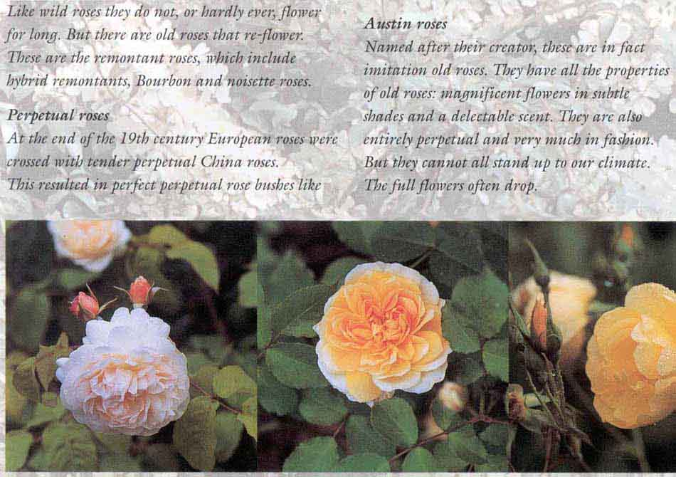
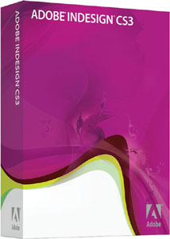
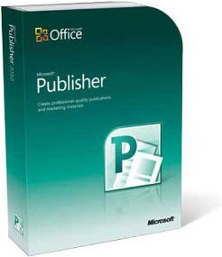
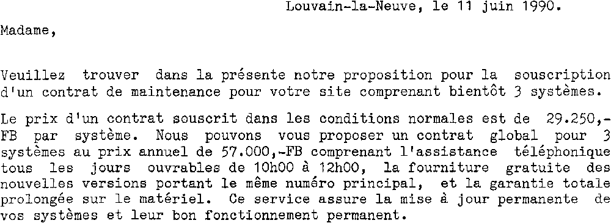
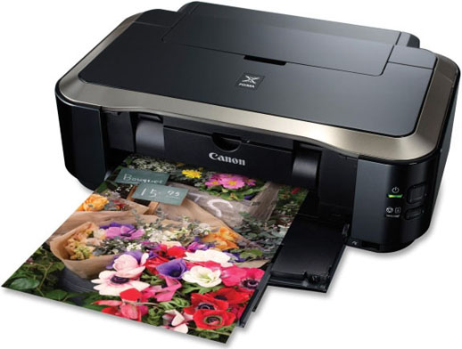
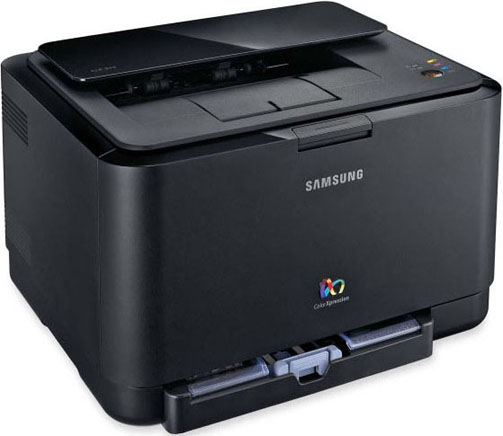
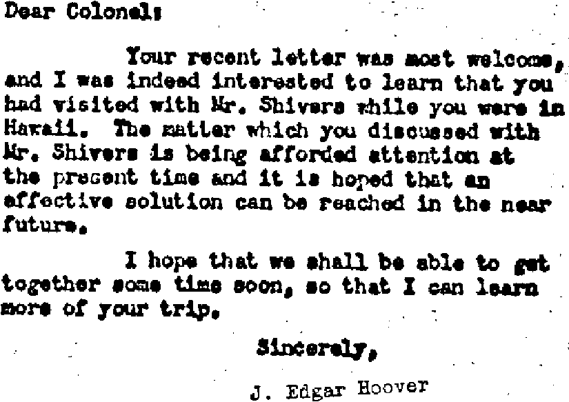
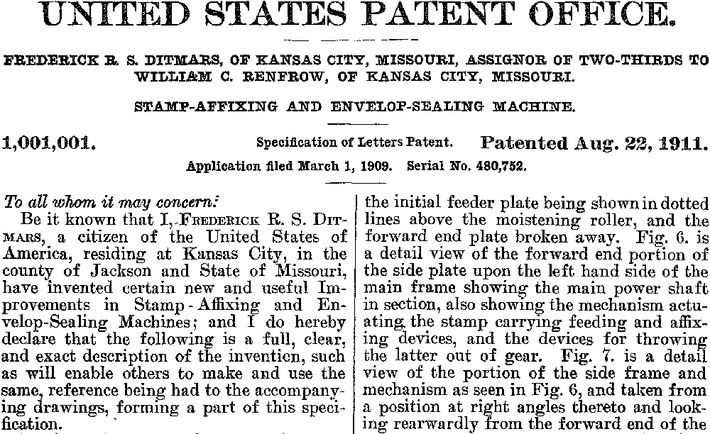
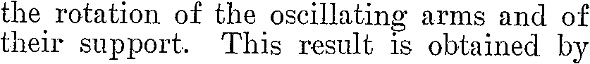
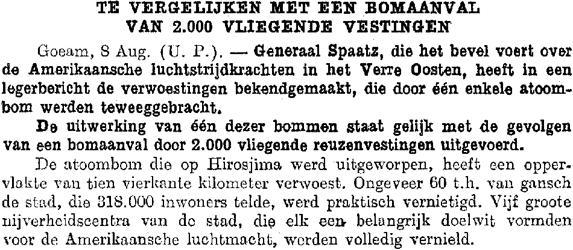

Tweet
Tweet
OCR technology has become accurate, fast and stable in the 90s. (OCR systems certainly benefited from the increased power of the microprocessors and the abundance of RAM memory in modern computers!)
And we should thank the OCR developers for that power. Here’s why: OCR packages nowadays are used to recognize documents from a wide variety of sources — newspapers, magazines, brochures, price lists, scientific articles, business letters, memos etc. Offset printing, laser and inkjet printing.

Indeed, the latest 30 years have shown not just a PC and OCR revolution but a document revolution as well. PC users have become modest “publishers” in their own right — and I mean paper documents, not web sites and blogging! There are multiple, concurring reasons for this remarkable change.
First of all, we have known an impressive evolution in word processing and layout software. Desktop publishing (“DTP”) software such as Adobe InDesign, Quark QuarkXpress, Microsoft Publisher etc. was unheard of in the first half of the 80s — doesn’t the word “desktop” in “desktop publishing” say it all? Who produced his own brochures, price lists and manuals 30 years ago? Nobody! Word processors are an even bigger success story. These applications allow to create documents of a much higher sophistication than ever before — recent versions of word processors offer much more functionality than the first (professional) layout packages in the late 80s used to do!
 
The second “accomplice” in the document revolution are the fonts you can now find on personal computers. Think of proportional typefaces such as Calibri, Cambria, Palatino, Tahoma, Times New Roman etc. that are now found on all PCs. Do you still use Courier for your letters and memos? And when you do come across such a document, isn’t your first reaction to think an obsolete memo has resurfaced from the company archives? Nevertheless, that typeface was once very popular when Windows 3.0 was around!

The third factor in this document revolution is the arrival of the first black-and-white, then color laser and inkjet printers. With the crisp output of fast 600 dpi laser printers, printed documents look more aesthetic, less monotonous and bland than was the case 30 years ago.
 
Recapturing old documents from the past, for instance resurfacing material from the filing cabinets, has become a secondary function of character recognition: think of texts that were produced using a typewriter — replaced by the word processor many, many years ago, thank you very much —, or texts that rolled out of a dot matrix printer — we prefer to send our customers better looking documents than that!

(To learn more about typewriters, visit the sister web site “Catch the Truth If You Can – Spielberg, Abagnale and OCR”.)
OCR packages should first and foremost read today’s documents, and that means mostly color and laserprinted documents with nice looking fonts and a complex layout. Only to a lesser extent will OCR systems nowadays read obsolete documents — printed material from the past or “primitive” documents as were spit out by the dot matrix or daisy-wheel printers (“impact printers”) in use many years ago. Such legacy documents get recognized only when there is a real need to do so.



Where does this technology come from? — Reaping the benefits of the neural revolution — … Or do word recognition — Each expert casts his vote — Autolearning font shapes — Putting more feet on the street — … With a document revolution thrown in
Home page — Intro — Scanners — Images — History — OCR — Languages — Accuracy — Output — BCR — Pen scanners — Sitemap — Search — Contact – Feedback